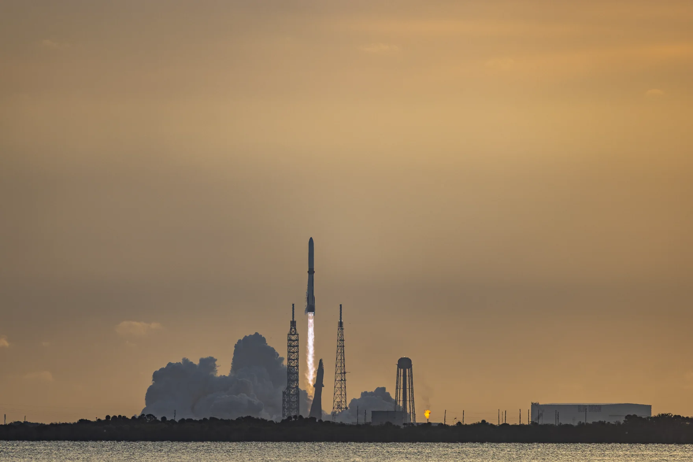
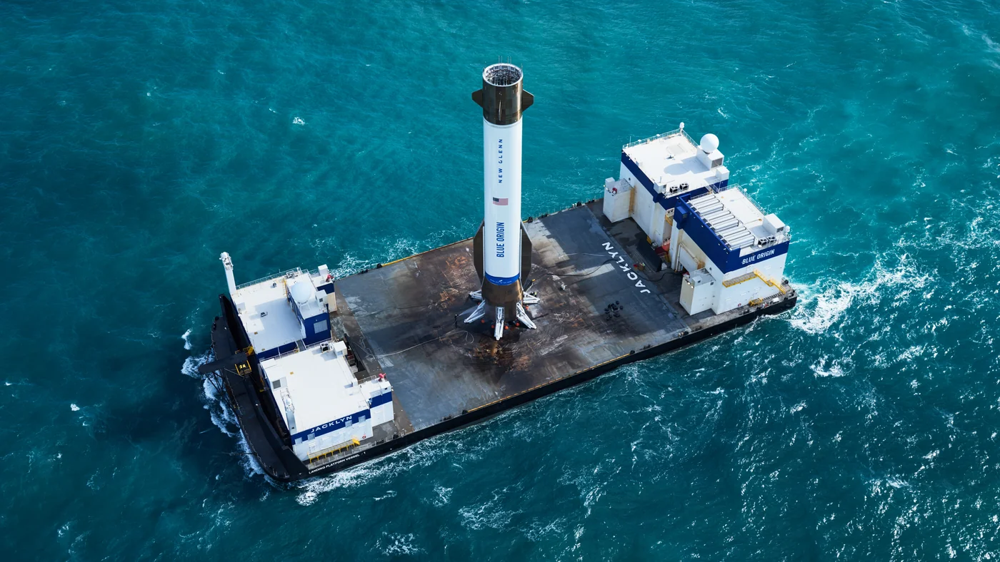

Primo stadio · 7 BE-4
Sette motori alimentati da gas naturale liquefatto e ossigeno liquido sollevano il razzo. Il booster è progettato per rientrare e volare di nuovo.
Lanci orbitali · Florida
Il lanciatore pesante di Blue Origin parte da Cape Canaveral. Il secondo stadio porta il carico in orbita, mentre il booster punta alla piattaforma Jacklyn nell’Atlantico.

Registro verificato il .
La configurazione 7×2 impiegata nei primi voli prende il nome dal numero di motori sui due stadi.
Sette motori alimentati da gas naturale liquefatto e ossigeno liquido sollevano il razzo. Il booster è progettato per rientrare e volare di nuovo.
Due motori riaccendibili, a idrogeno e ossigeno liquidi, regolano la traiettoria per raggiungere l’orbita di rilascio.
La carenatura protegge satelliti e sonde durante l’ascesa. Le due metà si separano quando la protezione aerodinamica ha esaurito la sua funzione.
Scheda del lanciatore Scheda dei motori
Blue Origin ha presentato anche la variante 9×4 e lo stadio aggiuntivo GS3 per le missioni ad alta energia. Sviluppo di GS3
Con la separazione degli stadi iniziano in parallelo l’inserimento orbitale e il rientro del booster.
I BE-4 si accendono a LC-36. Al termine della spinta del primo stadio, i due stadi si separano.

NG-1 ·
Il dimostratore Blue Ring Pathfinder resta fissato al secondo stadio nell’orbita terrestre media prevista.
I motori del primo stadio non si riaccendono per frenare il rientro. Il booster va perso.
NG-2 ·
Le due sonde NASA ESCAPADE si separano nella traiettoria di attesa prevista.
Primo atterraggio su Jacklyn. Il booster GS1-2 tornerà a volare su NG-3.
NG-3 ·
BlueBird 7 si separa in un’orbita troppo bassa per operare. La FAA riconduce l’anomalia di spinta a una perdita criogenica che ha congelato una linea idraulica.
Il GS1-2, già impiegato per NG-2, atterra su Jacklyn al secondo volo.
NG-2 · NASA
NG-2 ha rilasciato due sonde su una traiettoria di attesa vicino alla Terra. Nel novembre 2026 entrambe hanno combinato un passaggio ravvicinato alla Terra e un’accensione dei propri motori per dirigersi verso Marte.
Studieranno come il vento solare interagisce con l’ambiente marziano e contribuisce alla perdita di atmosfera.